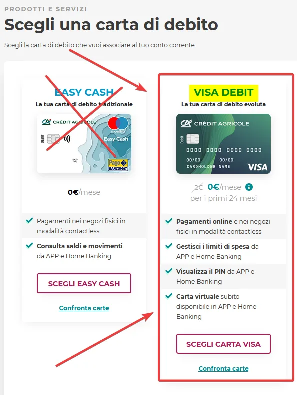
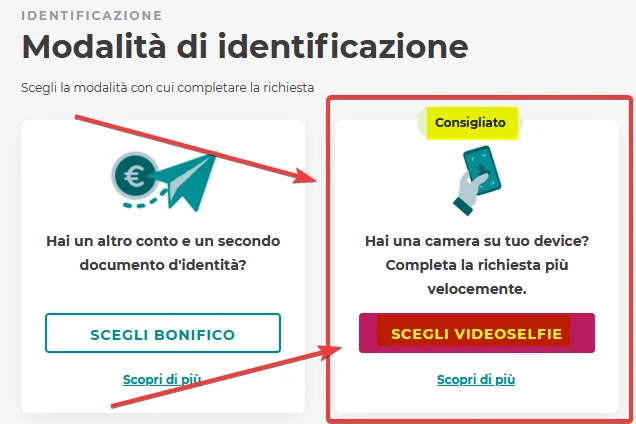
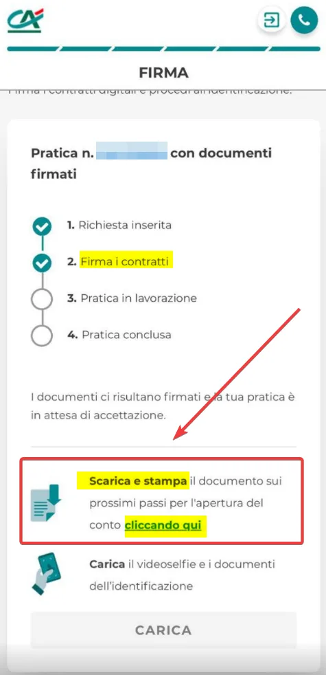
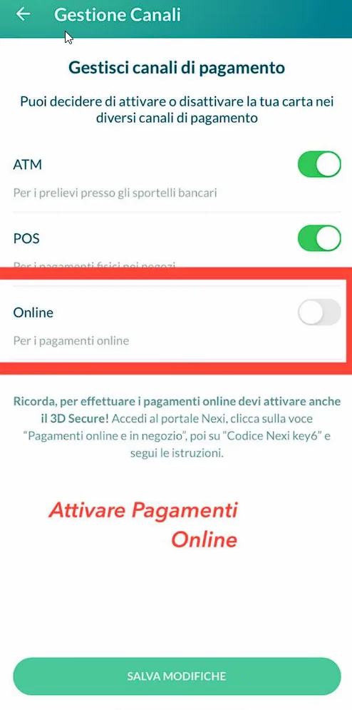

Crédit Agricole Conto Online
50€ in buoni Amazon se apri il Conto Online con il codice VISA entro il 12 gennaio 2027, chiedi la carta Visa e fai un pagamento entro 60 giorni. Ricevi altri 100€ se accrediti lo stipendio e 50€, 100€ o 150€ in base a quanto spendi con la carta.
Passaggi
- 1
Apri la pagina del Conto Online
Usa il pulsante blu di questa pagina e tocca «Apri il conto online». Se la pagina si blocca, riprova con un altro browser, per esempio Firefox.
- 2
Scrivi il codice VISA
Nel modulo di apertura, nel campo «Codice promozionale», scrivi VISA. Senza codice il premio non vale.
- 3
Scegli la carta Visa Debit
Serve la carta di debito Visa. La carta Bancomat «Easy Cash» paga solo nei negozi in contactless e non va bene per il bonus.

- 4
Compila i dati
Scegli una filiale: se non ne hai una vicina, mettine una qualsiasi e ti contattano per chiederti se vuoi aprire il conto lo stesso. Poi inserisci email, cellulare, codice fiscale, l'indirizzo dove ricevere la carta e le risposte su patrimonio e antiriciclaggio.
- 5
Verifica la tua identità
Scansiona il documento e la tessera sanitaria, poi registra un breve videoselfie leggendo a voce il codice che compare. Se sei al computer, puoi finire dal telefono con il link che arriva per email. Evita il riconoscimento con bonifico: richiede più di una settimana e un secondo documento.

- 6
Firma i contratti
Arriva una email con il numero di pratica. Firma chiamando il numero indicato e confermando con il codice OTP dell'app. Se il pulsante «Firma» non funziona, aspetta qualche minuto che i documenti siano pronti.

- 7
Accedi al conto
Dopo circa 24 ore arriva l'email con i codici di accesso (guarda anche nello spam). Entra e imposta la nuova password e la «data importante» che l'app ti chiede.
- 8
Attiva la carta virtuale
Dopo altre 24-48 ore arriva un SMS. Nell'app vai su Carte e conti › Pin e gestione carta › Gestisci impostazioni carta › Gestione canali e attiva «Online». Per vedere numero e PIN tocca «Visualizza PIN e dati carta», crea il codice Nexi Key6 a 6 cifre e conferma con il codice SMS.

- 9
Fai un pagamento con la carta
Versa qualche euro con un bonifico istantaneo, poi paga qualcosa con la carta Visa, di qualsiasi importo, entro 60 giorni dall'apertura: online, in negozio o con Google Pay e Apple Pay.
Per spendere poco
- Per il pagamento da 50€ basta un importo minimo: 5 monete TikTok (circa 8 centesimi) o un'app da pochi centesimi, pagate con la carta Visa aggiunta a Google Play o all'App Store.
- Per gli extra di spesa usa il giro Aircash entro 60 giorni dall'apertura: con 1.000€ di voucher ABON ricevi 50€ in buoni Amazon, con 3.000€ ne ricevi 150€. Riporta i soldi con la carta virtuale Aircash, che è gratis; con il bonifico paghi l'1% fino al 31 dicembre, poi il 2%.
- Il regolamento esclude solo i prelievi di contanti e le spese stornate o annullate.
Monete TikTok, da 8 centesimi
- Aggiungi la carta nuova come metodo di pagamento su Google Play o sull'App Store.
- Apri TikTok, tocca Profilo, poi il menu in alto a destra › Saldo › Ottieni monete.
- Scegli 5 monete: costano circa 8 centesimi su Android e circa 36 su iPhone. Tocca Ricarica.
- Paga con Google Play o App Store usando la carta nuova.
Un'app da pochi centesimi
- Su Google Play o sull'App Store compra l'app a pagamento più economica che trovi, di solito 10-15 centesimi, e pagala con la carta nuova.
Il giro Aircash, per le spese alte
- Scarica l'app Aircash e apri il conto.
- Compra i voucher ABON, da 10€ a 50€ l'uno, pagando con la carta del bonus. Online li trovi su Woolsocks, gratis e con l'1% di cashback, o su Best Shopping, dove il nome sul voucher deve essere uguale a quello del conto Aircash. Li vendono anche alcune tabaccherie, supermercati e negozi di elettronica.
- In Aircash tocca Versamento › Contanti ABON › Inserisci il codice manualmente e scrivi il PIN a 16 cifre. Carica ogni voucher appena lo compri.
- Riporta i soldi gratis: nell'app tocca Aircash Mastercard › Aggiungi carta › Virtuale (la carta virtuale non costa nulla), aggiungila ad Apple Pay o Google Pay e usala per ricaricare un altro tuo conto che accetta ricariche con carta, per esempio Revolut. Aircash non fa pagare i pagamenti con la sua carta.
- Se preferisci il bonifico verso il tuo IBAN, paghi l'1% fino al 31 dicembre 2026 (su 50€ te ne tornano 49,50€), poi il 2%. Arriva in un giorno lavorativo.
- Ripeti fino alla spesa richiesta: con 50€ sul conto bastano più giri.


Non ricaricare Aircash direttamente con la carta del bonus: molte banche non contano i pagamenti verso società finanziarie. Compra i voucher in un negozio o su un sito. Commissioni ufficiali di Aircash
- 10
Richiedi il buono in app
Il premio compare nella sezione CA Club dell'app entro 120 giorni dalla verifica del 14 marzo 2027, con un avviso per email o notifica. Richiedilo entro il 31 ottobre 2027: dopo quella data lo perdi. Il PDF con il codice Amazon compare in CA Club › Storico premi.
Per spendere poco
- Dopo il premio puoi chiudere il conto senza PEC né raccomandata con il trasferimento conto di un'altra banca, per esempio Cambio Facile di BBVA.
Bonus in più
- 100€ in più in buoni Amazon se accrediti almeno una mensilità di stipendio o pensione entro il 14 marzo 2027 e tieni l'accredito attivo fino a quel giorno.
- Altri buoni Amazon in base a quanto spendi con la carta Visa entro 60 giorni dall'apertura: 50€ se spendi tra 1.000€ e 1.999,99€, 100€ tra 2.000€ e 2.999,99€, 150€ da 3.000€ in su.
Dove si sbaglia
- Il canone zero vale per i nuovi clienti che chiedono il conto entro il 30 novembre 2026: dopo quella data controlla il costo sulla pagina del conto.
- La carta Visa è gratuita per 2 anni.
- Non partecipa chi ha chiuso un conto Crédit Agricole dal 1 gennaio 2021.
- Il codice VISA non si somma ad altre operazioni a premio del conto.
- Se perdi i codici di accesso, recuperali dal sito: Accesso clienti › Crédit Agricole Italia › Privati, con codice utente e numero di pratica.
Controllato il 20 nov 2026 sul sito ufficiale.